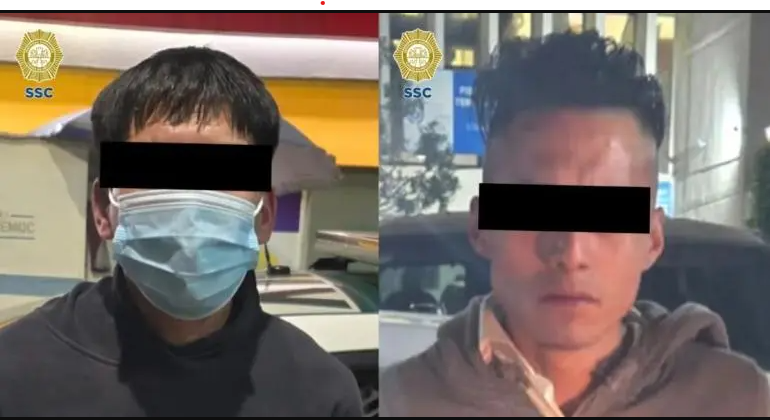

Arrestan a asaltante tras encañonar a conductor en el Centro Histórico

Ciudad de México.- Pablo Vázquez Camacho, titular de la Secretaría de Seguridad Ciudadana (SSC), dio a conocer que fue detenido el presunto asaltante que fue captado en video mientras encañaba a un automovilista en calles del Centro Histórico.
El jefe de la policía dio a conocer que detuvieron a dos hombres vinculados al robo ocurrido en avenida Arcos de Belén, a quienes se les aseguró una réplica de arma de fuego.
“Uno de los detenidos es quien aparece en un video durante el intento de asalto a un conductor en el mismo lugar”, anotó Vázquez Camacho vía la red social X, quien detalló que junto al arma asegurada se recuperó el dinero de la víctima.